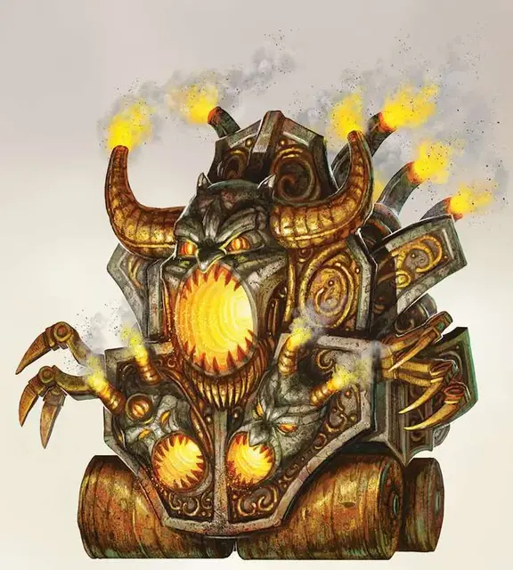

Адское орудие
Hellfire Engine
Огромный Конструкт, обычно законно-злой

Класс Доспеха 18 (Природный доспех)
Хиты 216 (16к12 + 112)
Скорость 40 футов
| мод | спас | ||
|---|---|---|---|
| СИЛ | 20 | +5 | +5 |
| ЛОВ | 16 | +3 | +8 |
| ТЕЛ | 24 | +7 | +7 |
| мод | спас | ||
|---|---|---|---|
| ИНТ | 2 | −4 | −4 |
| МДР | 10 | +0 | +5 |
| ХАР | 1 | −5 | +0 |
Сопротивление урону психическая энергия, холод; дробящий, колющий, рубящий от немагических атак, кроме нанесённых посеребрённым оружием
Иммунитет к урону огонь, яд
Иммунитет к состояниям отравление, паралич, очарование, глухота, испуг, истощение, бессознательность
Чувства тёмное зрение 120 футов, пассивное Восприятие 10
Языки понимает Инфернальный, но не говорит
Опасность 16 (15000 опыта)
Бонус мастерства +5
Особенности
Неизменяемая форма. Адское орудие обладает иммунитетом ко всем заклинаниям и эффектам, изменяющим его форму.
Сопротивление магии. Адское орудие совершает с преимуществом спасброски от заклинаний и прочих магических эффектов.
Необычная природа. Адское орудие не нуждается в воздухе, пище, питье или сне.
Действия
Сокрушающее передвижение. Адское орудие движется вперёд на расстояние, не превышающее свою скорость. Во время движения, оно может входить в пространство существ с размером не больше Большого. Существо, в чьё пространство вошло адское орудие, должно совершить спасбросок Ловкости Сл 18. В случае успеха существо выталкивается в ближайшее свободное пространство с пути адского орудия. При провале, машина давит существо и наносит ему 28 (8к6) дробящего урона.
Если адское орудие остаётся на том же месте, где лежит существо, то существо получает состояние опутанный, пока машина не продолжит свой путь и не освободит существу пространство. Пока существо опутано, он или другое существо, находящееся рядом на расстоянии 5 футов, может совершить проверку Силы Сл 18. При успехе, существо освобождается и перемещается на любое свободное пространство на расстоянии 5 футов от адского орудия, а состояние опутан пропадает.
Адское вооружение. Адское орудие использует одно из своих следующих орудий (выберите одно самостоятельно или бросьте к6):
• 1–2. Костный распылитель. Адское орудие выплёскивает разъедающее пламя в виде конуса размером 60 футов. Каждое существо, находящееся в области конуса, должно совершить спасбросок Ловкости Сл 20. При провале, существа получают 11 (2к10) урона огнём плюс 18 (4к8) урона кислотой, в случае успеха – половину этого урона. Существа, провалившие спасбросок, обливаются жгучей кислотой и получают 5 (1к10) урона огнём плюс 9 (2к8) урона кислотой в конце своего хода. Пострадавшее существо или существо, находящееся рядом с ним на расстоянии 5 футов, может потратить действие, чтобы выскребать эту горючую смесь.
• 3–4. Молниеносный цеп. Рукопашная атака оружием: +10 к попаданию, досягаемость 15 футов, одно существо. Попадание: 18 (3к8 + 5) дробящего урона плюс 22 (5к8) урона электричеством. Также, адское орудие может выбрать до трёх существ, которых может видеть на расстоянии 30 футов от первоначальной цели. Эти существа, должны совершить спасбросок Ловкости Сл 20, получая, при провале, 22 (5к8) урона электричеством, а при успехе половину этого урона.
• 5–6. Звуковая пушка. Адское орудие прицеливается и стреляет в точку в пределах 120 футов своей видимости. Каждое существо, находящееся в пределах 30 футов от выбранной точки, должно совершить спасбросок Ловкости Сл 20, получив, при провале, 27 (5к10) дробящего урона плюс 13 (2к12) урона звуком, и половину этого урона в случае успеха.
Если одно из выбранных орудий убивает существо, то через 1к4 часа душа существа, находящаяся у Реки Стикс, преобразуется в лемура [lemure]. Если существо не возрождают к этому времени, то только заклинание исполнение желаний [wish], или убийство лемура [lemure] и накладывание заклинания истинное воскрешение [true resurrection] на изначальное тело существа сможет вернуть его к жизни. Конструкты и дьяволы имеют иммунитет к этому эффекту.
Описание
Орудия Ада являются полуавтономными разрушителями. Амнизу и другие дьявольские генералы держат их в резерве, пока они не понадобятся, чтобы отразить вторжение демонов или смертных крестоносцев, но изредка один из этих механических и магических гибридов высвобождается и становится настоящей машиной для убийства, доведенный до бешенства своей потребностью уничтожать.
Адские орудия принимают разные формы, но все они имеют одну цель: убивать врагов волнами. Они неспособны к хитрости или обману, но их разрушительная мощь огромна.
Смертные существа, убитые адскими орудиями, обречены присоединиться к адским легионам не более чем за час, если не вмешаются обладатели могущественной магии. Эрцгерцоги не хотели ничего лучше, чем изменить такую магию, и поэтому она работает и против демонов, но это открытие до сих пор ускользало от них.